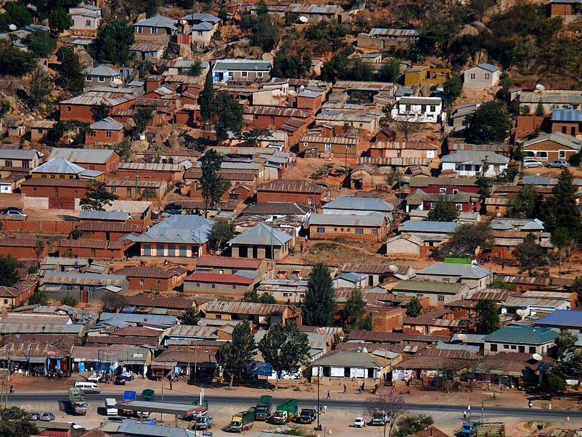
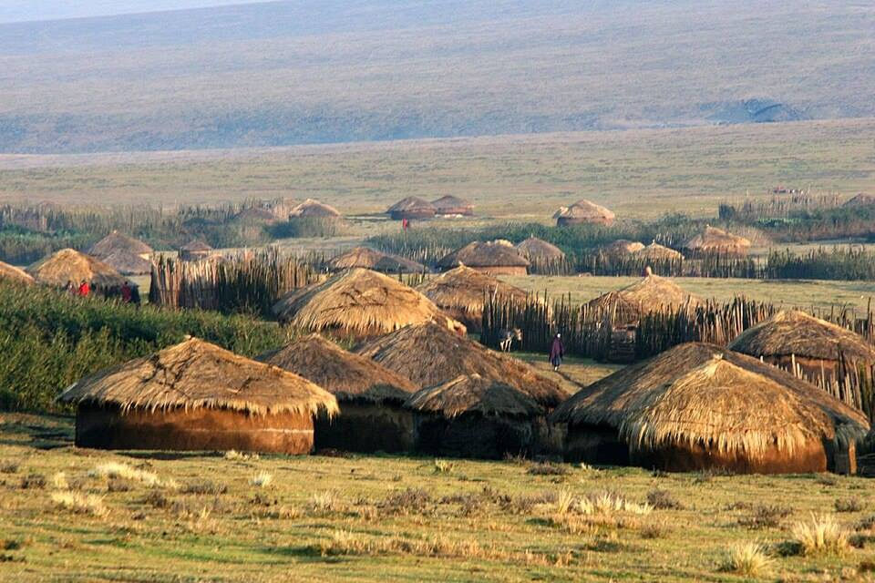

Parte 4 · La guida per tappe
Tappa per tappa
Dall'oceano agli altopiani, dal villaggio alla savana. Un capitolo per ogni luogo: cosa sapere, cosa vedere, i miei tips.
Foto: Il fiume Grande Ruaha, Parco Nazionale del Ruaha · Richard Mortel · CC BY 2.0
I luoghi
Dalla costa agli altopiani
Tocca un luogo sulla mappa o nella legenda per aprire il suo capitolo.
La mappa ha bisogno della connessione la prima volta che si apre.

1Tappa
Dar es Salaam
La porta sull'oceano: caotica, calda e piena di energia.
Foto: Mercato del pesce di Kivukoni, Dar es Salaam · Development Planning Unit, University College London · CC BY 2.0
- Abitanti
- oltre 5 milioni
- Clima
- caldo umido tutto l'anno, 25–32 °C
- Il nome
- «dimora della pace», in arabo
Traffico, minibus dipinti, bajaji e moto. Poi, sul lungomare, il vento dell'oceano, le palme e i dhow che rientrano. Dar non ha monumenti da fila: è una città da vivere, tra un mercato all'alba, gli spiedini della sera e un tramonto a Coco Beach.
In breve
Fondata negli anni '60 dell'Ottocento dal sultano di Zanzibar, fu capitale dell'Africa Orientale Tedesca e poi del Tanganica indipendente. La capitale ufficiale oggi è Dodoma, ma Dar resta il cuore economico del paese e il suo porto principale.
Cosa vedere
- Il mercato del pesce di Kivukoni, all'alba, con le aste del pesce appena sbarcato.
- Il centro a piedi: il monumento all'Askari, la cattedrale di San Giuseppe e la chiesa luterana di Azania Front, entrambe dell'epoca tedesca.
- Kariakoo, il grande mercato: tessuti, spezie, di tutto.
- Il Museo Nazionale e il Village Museum, con le case tradizionali dei popoli della Tanzania.
- Mwenge, il mercato degli intagliatori, per gli ultimi acquisti.
- Coco Beach al tramonto e, con mezza giornata libera, una barca per l'isola di Bongoyo.
- Il traghetto per Kigamboni: dieci minuti tra i pendolari, con la vista più bella sul porto.

Mangiare
La sera, gli spiedini di mishkaki e la nyama choma sui marciapiedi, e il chipsi mayai. Sulla costa la cucina swahili usa cocco e spezie. Le schede sono in Mangiare e bere.

2Tappa
Mbeya e Mpanga Kipengere
Cacao, nebbia e cascate: il primo assaggio degli altopiani del sud.
Foto: Cascate Kimani, riserva di Mpanga Kipengere · Thomas veroza · CC BY-SA 4.0
- Riserva
- circa 1.574 km², dal 2002
- Altitudine
- fino a circa 2.800 m
- Clima
- fresco, 10–22 °C, spesso piovoso
Dopo il caldo della costa, a Mbeya si respira: siamo sopra i 1.500 metri, tra montagne verdi coltivate fino in cima. È una città di commercio sulla strada per lo Zambia, e uno dei centri del caffè arabica tanzaniano. Più a est, la riserva di Mpanga Kipengere protegge praterie d'alta quota, foreste e moltissima acqua: non è un posto da Big Five, ma da cascate, nebbia, uccelli e fiori unici.
In breve
Mbeya nacque intorno al 1927 con la corsa all'oro dei vicini campi del Lupa. La riserva, gestita dall'autorità per la fauna (TAWA), protegge soprattutto l'acqua: da queste montagne nascono i fiumi che alimentano la pianura di Usangu e il Grande Ruaha.
Cosa vedere
- La cocoa experience: il cacao della regione di Mbeya, dalla pianta alla tavoletta, con la degustazione.
- Il mercato della frutta: avocado, banane, frutto della passione.
- Le cascate Kimani e le piscine naturali, il luogo più bello della riserva.
- Uccelli e fiori delle praterie: orchidee di terra, protee, lobelie (vedi Altopiani e Kitulo).
Gli animali e le piante di questa tappa

3Tappa
Mavanga
Una settimana in un villaggio degli altopiani di Ludewa: il cuore del viaggio.
Foto: Piantagioni di tè nel distretto di Ludewa, regione di Njombe · Gumtau · CC BY-SA 4.0. Non è una foto di Mavanga.
- Dove
- distretto di Ludewa, regione di Njombe
- Abitanti
- circa 9.700 nel circondario
- Clima
- notti fresche, piogge frequenti
Colline di mais e patate, boschi di pini, piantagioni di tè. Più a ovest i Monti Livingstone precipitano verso il lago Nyasa. Qui il turismo non esiste: per una settimana non saremo visitatori, ma ospiti. Le giornate seguono i ritmi del villaggio: la scuola al mattino, il calcio nel pomeriggio, il buio presto la sera.
In breve
La regione di Njombe è agricola e d'alta quota, conosciuta per il tè, le patate e gli avocado. Sugli altopiani vivono soprattutto i bena, i pangwa e i kinga, ognuno con la sua lingua; tra loro, e con noi, si parla swahili. Chiedete in famiglia quale lingua si parla: è un ottimo modo per iniziare una conversazione.
Method e la sua scuola
Method è il cuore del villaggio di Mavanga. Parla italiano ed è simpaticissimo: quando inizia a parlare non si ferma più, ma è un piacere ascoltarlo, perché ha sempre qualcosa di interessante da raccontare. Sta facendo un lavoro straordinario per la comunità.
Ha creato una scuola semi-privata in cui i bambini studiano, dormono e mangiano. Vengono da tutta la Tanzania per costruirsi un futuro, e le lezioni sono interamente in inglese. Con loro il nostro gruppo può organizzare momenti di svago: ne hanno bisogno.
La vita al villaggio
- Si mangia benissimo! Pranzo e cena sono a km 0, con le verdure dell'orto dietro la parrocchia e la carne di allevamenti locali. Quasi nulla è industriale: sapori autentici e genuini.
- Dormiamo in parrocchia, con letti veri e, a volte, la doccia calda. Siamo fortunati.
- Le condizioni igieniche sono basse. I bambini, ovviamente, non profumano di rose: è importante essere preparati a questa realtà.
- L'elettricità c'è: portate l'adattatore per le prese per ricaricare telefoni e dispositivi.
- Niente lavatrici, ma c'è una lavanderia a mano dove potete lavare tutto quello che volete, con sapone e olio di gomito :D
I bambini
- Non hanno l'idea del compleanno, del regalo di compleanno o del regalo in generale.
- Non lasciate soldi direttamente ai bambini o alle persone del villaggio. Vi consiglio vivamente di lasciarli a Method, che farà da tramite: è una persona SUPER fidata!
Pole pole
Alcuni dei lavori più pesanti li fanno le donne. Non cercate di cambiare le loro abitudini: ogni progresso avverrà pole pole, piano piano. Ci vorrà del tempo per capirlo, ma è giusto che il cambiamento avvenga con i loro tempi.
Tempi lunghissimi e vita lenta: vivete questo tempo rilassato, respiratelo, perché è unico. Non forzate nulla. All'inizio sarà difficile per noi weroaders, ma è la vera esperienza africana. Andrete via dal villaggio con l'idea di non aver fatto nulla, e invece avrete assorbito tantissimo, come una spugna. Ora può sembrare difficile da capire: al ritorno lo capirete.

4Tappa
Iringa
La città degli hehe, sul bordo di una scarpata, porta d'ingresso del Ruaha.
Foto: Il quartiere di Kihesa, Iringa · Ernst G. Ulz · CC BY-SA 4.0
- Altitudine
- circa 1.600 m
- Abitanti
- circa 200.000
- Clima
- mite, 15–28 °C
Iringa sta su un altopiano che finisce di colpo sopra la valle del Little Ruaha. È una cittadina tranquilla, con un grande mercato coperto, edifici dell'epoca tedesca e molti studenti.
In breve: Mkwawa e gli hehe
Nell'Ottocento gli hehe, guidati dal capo Mkwawa, erano la potenza militare degli altopiani. Nel 1891, a Lugalo, sconfissero una colonna tedesca; per sette anni resistettero, finché nel 1898 Mkwawa, circondato, si tolse la vita. Il suo cranio, portato in Germania, fu restituito solo nel 1954 e oggi è nel museo di Kalenga. Per molti tanzaniani Mkwawa è un eroe nazionale.
Cosa vedere
- Le tea field: visitiamo le piantagioni di tè degli altopiani, con la raccolta delle foglie a mano e una tazza di tè dove cresce.
Se abbiamo tempo
- Gangilonga Rock: una breve camminata fino a una roccia sacra, con una bellissima vista su Iringa.
- Le pitture rupestri di Igeleke: antichissime pitture color ocra che raffigurano figure umane ed elefanti. Per visitarle potete cercare una guida in città.

5Tappa
Parco Nazionale del Ruaha
Il grande parco selvaggio del sud: baobab, leoni, elefanti e pochissime jeep.
Foto: Elefanti al tramonto, Ruaha · Brian Harries · CC BY 2.0
- Superficie
- circa 20.200 km², il secondo parco della Tanzania
- Istituito
- nel 1964
- Clima
- caldo, 20–33 °C
Il Ruaha è immenso, ma lo visita una piccola parte dei turisti del Serengeti: qui un leone sdraiato sulla pista può essere tutto vostro. Colline rocciose, baobab giganti, savana di acacie e, in mezzo, il Grande Ruaha, il fiume che dà il nome al parco.
In breve
Il Ruaha è il punto in cui la savana dell'Africa orientale incontra quella australe, e qui si vedono insieme specie che altrove non si incontrano: kudu maggiore e minore, antilope nera e roana. È anche uno dei luoghi migliori al mondo per i grandi predatori: secondo il Ruaha Carnivore Project, nel suo ecosistema vive circa un decimo dei leoni rimasti in natura.
Le zone migliori per gli avvistamenti sono lungo il fiume. Le probabilità per ogni specie sono nell'atlante della fauna.
Dormire
Campo tendato o lodge dentro il parco, spesso con la corrente solo a orari e senza wifi. La sera, intorno al fuoco, si sentono iene, leoni e ippopotami.
Gli animali da cercare

6Tappa
Cultura masai
Un popolo di pastori, con il bestiame al centro di tutto.
Foto: Villaggio masai ai piedi del monte Lolmalasin, altopiani di Ngorongoro (non è il villaggio che visiteremo) · Guillaume Baviere · CC BY 2.0
- Lingua
- maa (e swahili)
- Il saluto
- Supa! · risposta: Ipa!
Il territorio masai è più a nord, tra il Kenya e il Serengeti, ma da decenni molte famiglie si sono spostate a sud in cerca di pascoli. Le comunità ai margini del Ruaha vengono da queste migrazioni.
In breve
- Il bestiame è ricchezza, cibo, dote e prestigio.
- Il villaggio, l'enkang, è un cerchio di case basse costruite dalle donne, circondato da un recinto di rami spinosi che di notte protegge gli animali.
- Le età della vita: da giovani si è ilmurran, guerrieri; poi si diventa anziani, e si decide insieme. Le danze in cui i giovani saltano in alto segnano questi passaggi.
- Le perline raccontano età e stato civile, e il rosso della shuka è il colore simbolo del popolo.
- Oggi molti masai vanno a scuola, coltivano accanto al pascolo, usano il cellulare. La vita da pastori è sempre più difficile, tra siccità e conflitti per la terra.

7Tappa
Parco Nazionale di Mikumi
Un safari dal finestrino: la statale per Dar attraversa la savana.
Foto: Parco Nazionale di Mikumi · mwanasimba · CC BY-SA 2.0
- Superficie
- circa 3.230 km²
- Istituito
- nel 1964
- Clima
- caldo, 22–32 °C
La statale A7, la grande strada tra il porto di Dar e lo Zambia, attraversa il Parco di Mikumi per una cinquantina di chilometri. Dal finestrino si vedono elefanti, giraffe, zebre, impala, bufali e babbuini, tra camion e cisterne.
La strada
- La gola del Little Ruaha, appena lasciata Iringa, tra rocce e centinaia di baobab: uno dei paesaggi più belli del viaggio.
- Il parco: un'ora circa con gli occhi fuori dal finestrino. Gli elefanti attraversano spesso al mattino e verso sera.
- Morogoro, ai piedi dei monti Uluguru, e poi la pianura sempre più calda verso la costa.
Sulla statale, dentro il parco, non ci si ferma: foto dal finestrino del van, con zoom e raffica.